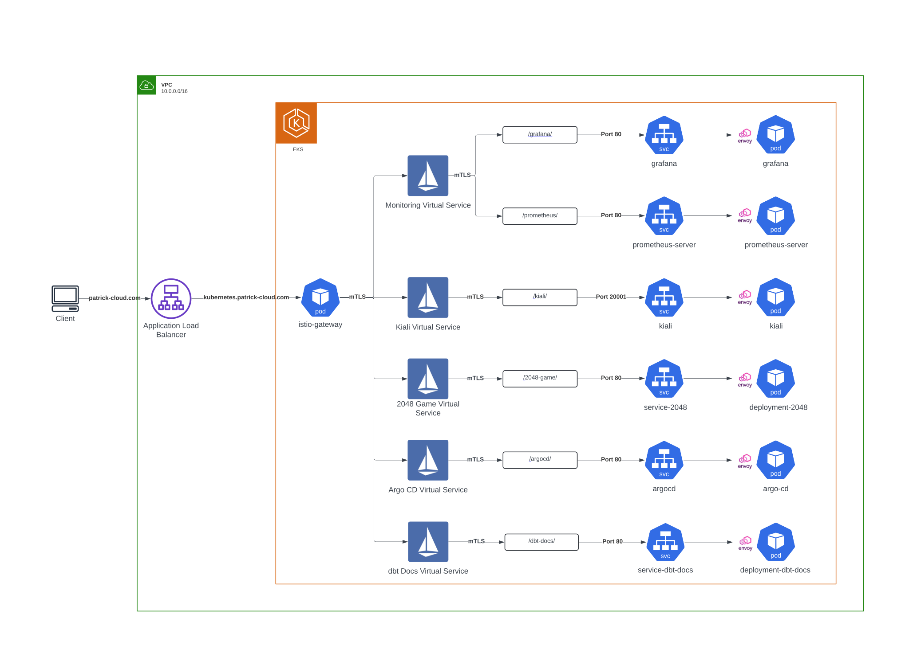
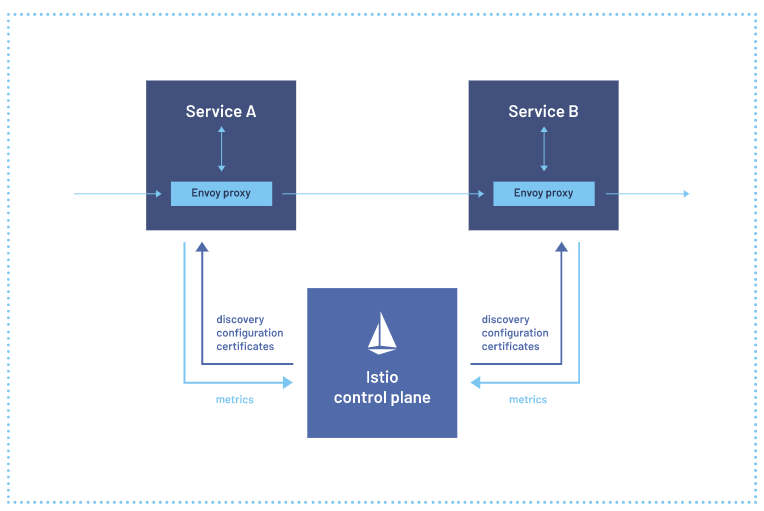

Kubernetes
Architecture

Architecture Decisions
- Secuirty - AWS Certificate Manager was used to encrypt traffic from the client to the Application Load Balancer. A self-signed certificate was used to encrypt traffic from the ALB to the Istio Gateway Ingress. For all traffic inside the cluster, I used Istio's built-in Mutual TLS between all services.
- Metrics Collecting - Prometheus scrapes metrics from Kubernetes, Grafana, Istio, Jenkins and Itself
- Storage - AWS EBS volumes were attached to Grafana, Prometheus Server and Prometheus Alert Manager
- Credentials - External Secrets was used to retreive Grafana Admin Credentials from AWS Secrets Manager
- Ingress - Root URL had to be changed for Grafana, Prometheus, Kiali and Argo CD to kubernetes.patrick-cloud.com/{service}/
- https://kubernetes.patrick-cloud.com/grafana/ --> Grafana
- https://kubernetes.patrick-cloud.com/prometheus/ --> Prometheus
- https://kubernetes.patrick-cloud.com/kiali/ --> Kiali
- https://kubernetes.patrick-cloud.com/argocd/ --> Argo CD
- https://kubernetes.patrick-cloud.com/dbt-docs/ --> dbt Docs
- https://kubernetes.patrick-cloud.com/game-2048/ --> 2048 Game
- Service Accounts - A Cloudwatch service account was attached to the Grafana pod so it could retreive metrics from AWS Cloudwatch

Consoles
- Grafana - Open-source platform for data visualization and monitoring
- Kiali - Console for the Istio Service Mesh
- Prometheus - Open-source tool that collects metrics from infrastructure and applications and stores them in a time-series database
- Argocd - Declarative continuous delivery tool for Kubernetes
- dbt Docs - Documentation website for the SQL Warehouse within Databricks
- 2048 Game - I used a publicly available image to deploy a fun game
Services I used
Istio
-

Istio is an open-source service mesh platform that helps organizations manage, secure, and connect microservices. Here are the reasons why I used it.
- Security capabilities - I used Mutual TLS to secures service-to-service communication for all traffic on the service mesh. Istio provides a key management system to automate key and certificate generation, distribution, and rotation. Also, Istio is compatible with OpenID Connect providers like AuthO and Goolgle Auth so I can incoporate them later if needed
- Observability - I used Kiali for a dashboard to vizualize the pods and services across the service mesh.
- Traffic management - I used the Gateway as an ingress for all incoming traffic into the Kubernetes cluster. Istio’s traffic routing rules let you easily control the flow of traffic and API calls between services. Istio simplifies configuration of service-level properties like circuit breakers, timeouts, and retries, and makes it easy to set up important tasks like A/B testing, canary deployments, and staged rollouts with percentage-based traffic splits.
- More info on the Istio Service Mesh here
Other Solution looked at - Linkerd
Istio seemed to be a more all-inclusive and simpler solution. Linkerd did not support Ingresses like Istio did. Istio egress was much simpler with Gateways and Virtual Service objects compared to DNS and Delegation Tables. The big downside I see is that Istio is a much more heavyweight solution.
Prometheus and Grafana Stack
-

Prometheus
Prometheus is an open-source tool that collects metrics from infrastructure and applications and stores them in a time-series database. Here are the reasons why I used it:
- Alerting - This component evaluates user-defined rules and sends alerts to various channels, including integrations such as email, PagerDuty, and Slack. It offers various functionalities like deduplication, grouping, routing, silencing, and inhibition of alerts.
- Service discovery - This component is used to discover targets automatically and monitor new service instances. Prometheus supports service discovery mechanisms such as Kubernetes service discovery, DNS, and file_sd.
- Realiable metrics - This component collects time-series data from exporters or scrapes data from target systems and stores it in a time-series database.
- Targets that are scraped:
- Jenkins - jenkins.patrick-cloud.com/prometheus
- Prometheus - localhost:9090/metrics
- Grafana - grafana.monitoring.svc.cluster.local/metrics
- Istio - labels for istiod and envoy stats
- Kubernetes - apiservers, nodes, pods
- More info on Prometheus here
Grafana
Grafana is an open-source platform for data visualization and monitoring. Here are the reasons why I used it:
- Database support - Grafana supports a wide range of databases. Some Databases I am using are Prometheus, AWS Cloudwatch and Postgres.
- Monitoring - Grafana can help users troubleshoot any IoT device issue including kubernetes cluster issues like pods or nodes.
- Ease of use - Grafana has a long list of pre-made dashboards that can easily be imported from the most commmon data sources.
- Dashboards created:
- Jenkins - Performance and Health Overview
- Prometheus - Prometheus Stats
- Grafana - Grafana Metrics
- Istio - Istio Service, Control Plane and Mesh Dashboards
- Snowplow - Collector Metrics
- Amazon - AWS Cloudwatch Logs, EC2, EBS, EKS, RDS and Lambda (Pulled directly from cloudwatch and not Prometheus via a servic-account)
- More info on Grafana here
Other Solution: Elastic Stack
With this proejct, my focus isn't on analyzing logs but analyzing metrics and visualizing real-monitoirng so Prometheus and Grafana Stack was the easy choice.
Argo CD
-

Argo CD declarative, GitOps continuous delivery tool for Kubernetes. 3 Reasons why I used it:
- Easy Roll Back - ArgoCD pulls any changes and applies that to the cluster. If something breaks or a new application version fails to start, you can reverse to the previous working state in the git history.
- User Interface - ArgoCD has a convenient web-based UI that simplifies working with the tool.
- Dynamic - You can use any declarative configuration tool from YAML, Helm charts, Kustomize etc.
- More info on Grafana here
Other Solution: Flux
Argo CD having an easy to use UI was a big advantage vs. no UI with Flux.
Other Considerations
-
AWS ALB managed by Terrafrom vs. AWS Load Balancer Controller managed by kubernetes
- Can use the ALB as the center point to all my services(EKS + EC2)
- Customize the ALB for security(least privilege)
- Downside is I have to figure out the exposed port by Istio Gateway and cofigure it with the ALB and security groups
External Secrets vs. AWS Secrets Store CSI Driver managed by kubernetes
- AWS CSI driver was limited to injecting secrets into pods, I wanted to inject secrets into manifest files
- External Secrets stored the secret in the Kubernetes Secrets resource making it very accessible